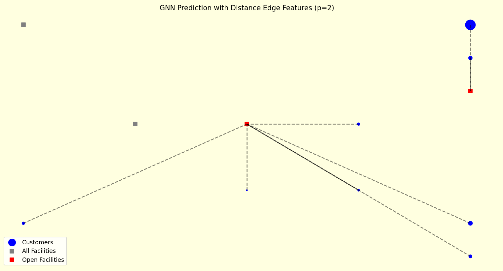

Supply Chain + AI = The future is already here.
The Facility Location Problem (FLP) — deciding which facilities to open to serve customers at the lowest cost — is a classic optimization challenge. Traditionally, we rely on MILP, heuristics, metaheuristics or simulation.
But recently, I explored a different path:
🔥 Graph Neural Networks (GNNs) for network design.
🧠 Why GNN for FLP?
Facility location is inherently a graph problem:
• Customers → nodes
• Facilities → nodes
• Distances / costs → edges
• Demand → node features
• Capacities / constraints → node attributes
Traditional models compute optimal solutions, but they struggle with:
❗ large networks
❗ real-time re-optimization
❗ frequent scenario changes
❗ need for fast approximation at scale
This is where GNNs shine.
⚡ What GNNs Bring to FLP
✔ Learn how demand clusters form
✔ Understand network structure
✔ Predict facility openings directly
✔ Solve near-optimal FLP without running MILP every time
✔ Scale easily to thousands of nodes
✔ Produce instant predictions after training
In my experiment, the GNN identified the best 2 facilities to open for a small network based purely on learned spatial, demand, and connectivity patterns — no solver calls, no branch-and-bound, just learned structure.
📌 Why this is exciting for Supply Chain
This approach opens doors to:
🔹 Real-time network design
🔹 Rapid scenario planning
🔹 Instant redesign under demand shocks
🔹 Self-learning supply chain models
🔹 AI-assisted optimization for planners
GNNs won’t replace optimization solvers — but they can augment, accelerate, and automate decision-making in modern supply chains.
Graph AI will reshape network design, hub selection, routing, inventory placement, supplier selection, and transport planning — and the Facility Location Problem (FLP) is the perfect place to begin this transformation.
Steps:
# Data Preparation :
We build bipartite edges so the GNN can learn the true assignment & distance relationships that define FLP — enabling it to predict optimal facility locations. The data is prepared using any exact method (MILP)
1.Construct Graph Node Features (customer–facility pairs)
2.Node Labels (Supervision for Training)
3.Save as PyTorch Geometric Dataset
GNN Training:
1. Define the GNN Model (GraphSAGE)
2. Load the Prepared Dataset
3. Initialize Training Components
4. Training and validation Loop (forward and back propagation)
6. Save the Trained Model
# Predict with the required data and visualise